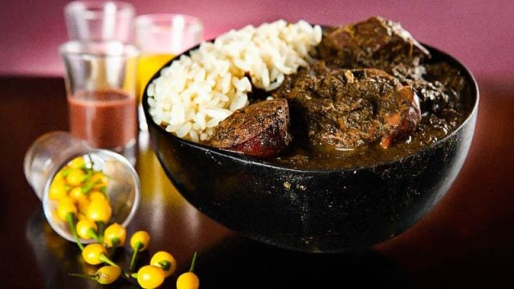

Maniçoba

Description
Maniçoba is a hearty and traditional dish from Pará, Brazil. Often called "the feijoada of the Amazon",
it is made from the leaves of the manioc plant, which are boiled for several days to remove toxins. The leaves
are then combined with various types of pork and sausage, creating a rich and flavorful stew. It's a staple
during the Círio de Nazaré festival, a major cultural and religious event in Belém.
Ingredients
- 2 kg manioc leaves (or jambu leaves)
- 500 g pork belly, cut into chunks
- 300 g smoked bacon, diced
- 300 g sausage, sliced
- 300 g salted pork ribs, soaked to remove excess salt
- 200 g salted pork trotters, soaked to remove excess salt
- 1 large onion, chopped
- 6 cloves garlic, minced
- 2 tablespoons vegetable oil
- 1 bunch cilantro, chopped
- Salt and black pepper to taste
Steps
- Prepare the Manioc Leaves:
- Wash the manioc leaves thoroughly and chop them finely.
- Boil the leaves in plenty of water for at least 5-7 days, changing the water daily to remove toxins.
Ensure the leaves are always covered with water.
- Once the leaves are soft and no longer toxic, drain and set aside.
- Cook the Meat:
- In a large pot, heat the vegetable oil over medium heat.
- Add the chopped onion and minced garlic, and sauté until fragrant.
- Add the pork belly, smoked bacon, sausage, pork ribs, and pork trotters. Cook until all the meat is
browned and starting to render fat.
- Combine Ingredients:
- Add the boiled manioc leaves to the pot with the meat.
- Mix well to combine all ingredients.
- Add water to cover everything and bring to a boil.
- Reduce the heat to low and let it simmer for several hours, stirring occasionally.
- Season and Finish:
- Once the meat is tender and the flavors have melded together, season with salt and black pepper to
taste.
- Add the chopped cilantro and stir well.
- Serve:
- Serve the *Maniçoba* hot, typically accompanied by white rice and farinha (manioc flour).